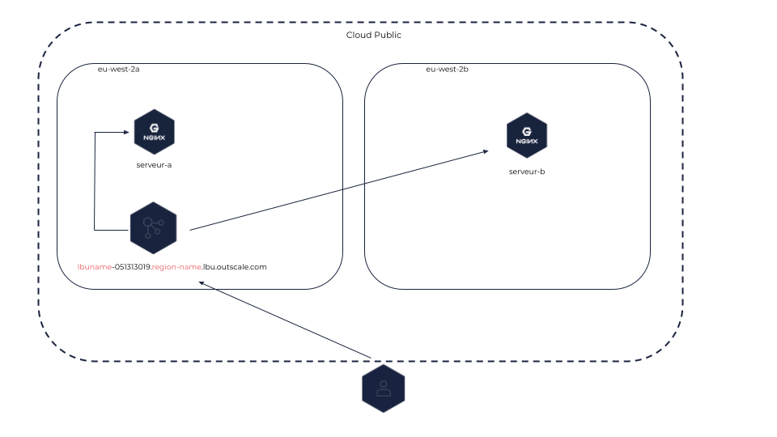
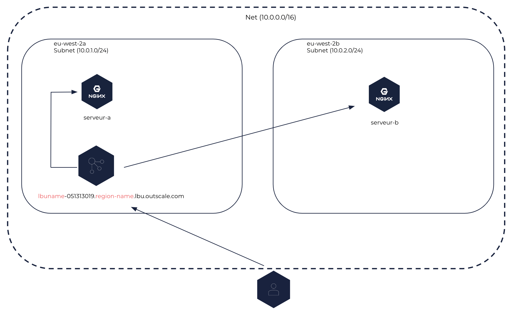
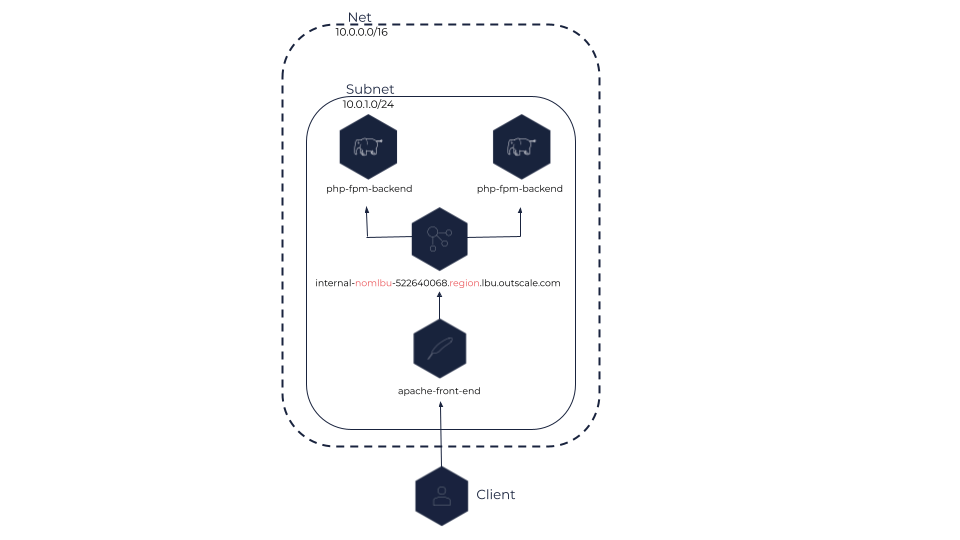

À propos des load balancers
Un load balancer (répartiteur de charge) distribue le trafic réseau entrant entre plusieurs machines virtuelles (VM) du Cloud public ou d’un Net pour éviter leur surcharge et augmenter la disponibilité et la fiabilité de vos services.
Vous pouvez :
-
Distribuer la charge réseau à l’aide des protocoles TCP/SSL et HTTP/HTTPS.
-
Distribuer la charge réseau entre plusieurs Sous-régions ou Subnets.
-
Configurer des health checks pour vérifier l’état de chacune des VM et envoyer le trafic uniquement aux VM saines.
Informations générales
Load balancers et VM backend
Les VM enregistrées auprès d’un load balancer sont appelées VM backend. Vous pouvez enregistrer autant de VM backend que nécessaire auprès d’un load balancer, et vous pouvez enregistrer ou désenregistrer des VM backend à tout moment selon vos besoins.
|
En fonction de ses règles de security groups, une VM backend peut recevoir soit le trafic venant uniquement du load balancer soit le trafic venant à la fois du load balancer et d’une autre source (par exemple un autre load balancer, Internet, ou autres).
Les load balancers fonctionnent en mode round robin : les requêtes frontend sont distribuées de façon égale entre les VM backend. Le nombre de requêtes frontend reçues par une VM backend correspond ainsi au nombre total de requêtes frontend divisé par le nombre total de VM backend.
Le load balancer vérifie la santé des VM backend pour déterminer les VM saines vers lesquelles il peut distribuer du trafic. Pour en savoir plus sur les health checks, voir Configurer les health checks.
|
Vous ne pouvez configurer qu’un seul type de health checks par load balancer, en spécifiant le protocole et le port des VM backend à vérifier. Nous vous recommandons donc de créer un load balancer par service, afin d’éviter la non-détection d’une panne. |
Types de load balancers
Un load balancer peut être soit relié à Internet, soit interne :
-
Un load balancer relié à Internet peut être créé dans le Cloud public ou dans un Net. Ce type de load balancer distribue les flux entrants venant d’Internet entre les VM backend qui peuvent être placées dans différentes Sous-région d’une même Région ou différents Subnets d’un même Net. Ce load balancer est accessible depuis Internet.
Load balancer relié à Internet dans le Cloud public
 |
Load balancer relié à Internet dans un Net
 |
-
Un load balancer interne peut être créé uniquement dans un Net. Ce type de load balancer distribue le trafic entre les VM backend placées dans un ou plusieurs Subnets du Net. Ce load balancer est accessible uniquement depuis le CIDR du Net.
Load balancer interne
 |
Nom DNS
Un nom DNS est automatiquement attribué à chaque load balancer et est composé du nom du load balancer et de son endpoint (nom-du-load-balancer.endpoint). Ce nom DNS vous permet d’accéder à votre load balancer et de lui envoyer des requêtes.
Les load balancers reliés à Internet reçoivent un nom DNS public, tandis que les load balancers internes reçoivent un nom DNS privé.
|
Le nom DNS d’un load balancer interne est résolu en IP privée du load balancer, que ce soit en privé (dans le Net) ou publiquement (sur Internet). |
IP publique
Les IP publiques sont des adresses IPv4 publiques que vous pouvez allouer à votre compte. Vous pouvez associer des IP publiques uniquement à des load balancers reliés à Internet dans le Cloud public ou dans un Net.
Les propriétaires des IP publiques sont 3DS OUTSCALE ou vous, selon ce que vous spécifiez lorsque vous associez celles-ci.
Le tableau ci-dessous décrit les différents comportements d’association lorsque vous utilisez le paramètre PublicIp :
| Méthode de l’API OUTSCALE | Spécification de l’IP publique | Comportement d’association |
|---|---|---|
Specifiée |
L’IP publique spécifiée est associée au load balancer relié à Internet. |
|
Non specifiée |
Une IP publique détenue par 3DS OUTSCALE est automatiquement créée et associée au load balancer relié à Internet. |
|
Specifiée |
Si vous êtes propriétaire de la précédente IP publique, elle est dissociée. Si 3DS OUTSCALE est propriétaire de la précédente IP publique, elle est suprimée. |
|
Spécifiée avec une valeur vide |
Si vous êtes propriétaire de la précédente IP publique, elle est dissociée et remplacée par une IP publique détenue par 3DS OUTSCALE. Si 3DS OUTSCALE est propriétaire de la précédente IP publique, elle reste associée et une erreur est renvoyée. |
|
Non specifiée |
Aucun changement. |
|
Non requise |
Si vous êtes propriétaire de l’IP publique, elle est dissociée. Si 3DS OUTSCALE est propriétaire de l’IP publique, elle est supprimée. |
Pour en savoir plus sur les IP publiques, voir À propos des IP publiques.
Configuration
Listeners
Chaque load balancer doit être créé avec un listener pour pouvoir recevoir des requêtes. Un listener correspond au processus qui traite les requêtes arrivant au load balancer depuis Internet ou depuis votre réseau privé, configuré avec un protocole et un port, avec un port compris entre 1 et 65535 tous deux inclus.
Vous configurez également le protocole et le port pour router le trafic jusqu’aux VM backend.
Les load balancers OUTSCALE prennent en charge les protocoles HTTP/HTTPS et TCP/SSL. Les protocoles sécurisés sont supportés uniquement entre le client et le load balancer. Les protocoles frontend et backend doivent être de même niveau, c’est-à-dire que :
-
Si le protocole frontend est HTTP ou HTTPS, le protocole backend doit être HTTP.
-
Si le protocole frontend est TCP ou SSL, le protocole backend doit être TCP.
Le numéro de port que les VM backend écoutent doit être compris entre 1 et 65535, tous deux inclus.
|
Vous pouvez également gérer le comportement d’un load balancer à l’aide de listener rules. Ces règles vous permettent de rediriger le trafic vers une VM backend spécifique en fonction d’un chemin d’accès dans l’URI de la requête. Pour en savoir plus, voir Créer une listener rule.
Sessions persistantes
Par défaut, un load balancer distribue chaque requête réseau indépendamment des autres, ce qui signifie que deux requêtes successives d’un même utilisateur peuvent être routées vers deux VM backend différentes. Toutefois, vous pouvez utiliser une politique de sessions persistantes (sticky sessions) pour lier l’utilisateur à la VM backend ayant traité la première requête.
Les sessions persistantes fonctionnent au moyen d’un cookie de persistance, avec une durée spécifique. À l’expiration du cookie de persistance, la session persistante est réinitialisée et la prochaine requête crée une nouvelle session persistante.
|
Les sessions persistantes se configurent uniquement pour les load balancers ayant des listeners HTTP ou HTTPS. |
Il existe deux types de politiques de sessions persistantes :
-
Reposant sur une durée : Le cookie de persistance a une durée spécifique dans le temps.
-
Contrôlée par une application : Le cookie de persistance a la même durée que celle d’un cookie de la VM backend.
|
En cas de défaillance de la VM backend à laquelle l’utilisateur est lié, la session persistante est réinitialisée vers les VM saines. La session persiste alors sur une autre VM jusqu’à l’expiration du cookie, même si la VM d’origine redevient saine. |
Pour en savoir plus, voir Configurer des sessions persistantes pour vos load balancers.
|
Vous pouvez activer les secure cookies sur vos load balancers. Un secure cookie est un cookie qui ne peut être émis qu’à travers une connexion HTTPS. Pour en savoir plus, voir Modifier les attributs d’un load balancer. |
Redirections SSL
Vous pouvez créer un listener pour un load balancer avec un certificat serveur SSL x509 afin de rendre possible le trafic chiffré en protocole SSL ou HTTPS entre le client initiant les connexions SSL ou HTTPS et le load balancer. Les certificats serveurs x509 sont délivrés par une autorité de certification et contiennent des informations d’authentification comme une clé publique et la signature de l’autorité de certification. Ce certificat est utilisé par le load balancer pour déchiffrer les requêtes de connexion venant de ce client, qui sont ensuite envoyées vers ses VM backend enregistrées avec le protocole de votre choix (HTTP ou TCP).
|
Le certificat utilisé par le load balancer pour la terminaison SSL peut être remplacé à tout moment. Pour en savoir plus, voir Remplacer le certificat SSL utilisé par un load balancer HTTPS. |
La terminaison SSL assure la confidentialité de la communication entre Internet et le load balancer grâce à la vérification des informations d’authentification. La communication entre votre load balancer et ses VM backend enregistrées est en clair et sa sécurité est assurée par les règles que vous ajoutez aux security groups de vos VM backend. Vous pouvez par exemple souhaiter utiliser un load balancer avec terminaison SSL dans les cas où vous devez assurer un certain niveau de confidentialité, par exemple pour un site web qui requiert une authentification par identifiant et mot de passe.
Vous pouvez également envoyer des flux HTTPS vers des VM backend qui portent un certificat SSL à l’aide du protocole TCP. Grâce à cette méthode appelée SSL passthrough, le certificat est installé sur les VM backend plutôt que sur le load balancer. Le load balancer ne déchiffre pas les données circulant entre le client et les VM backend via le protocole TCP.
Pour en savoir plus sur comment configurer des listeners pour les load balancers avec terminaison SSL ou SSL passthrough, voir Configurer un load balancer pour une redirection SSL.
Vous pouvez créer un listener SSL ou HTTPS lorsque vous créez le load balancer, ou vous pouvez l’ajouter au load balancer à tout moment. Vous devez d’abord télécharger votre certificat serveur dans Elastic Identity Management (EIM), et le spécifier lorsque vous créez le listener en utilisant son OUTSCALE Resource Name (ORN). Pour en savoir plus, voir Travailler avec les certificats serveurs.
|
Il est recommandé d’utiliser un certificat par load balancer. |
Pages connexes